AnyPortrait > Manual > A PSD File and Existing Objects
The "Re-import PSD" function allows you to apply a modified PSD file to your existing work.
However, this feature can lead to various issues depending on how the PSD file has been modified.
A previous section of the manual (Link) covered how to map PSDs to mesh groups and how to handle changes to layers.
When re-importing a PSD file, the objects within the existing mesh group are readjusted—in terms of position, scale, and so on—to best match the images in the PSD file.
However, this process can sometimes lead to unintended results.
Objects might shift to unexpected locations, or there may be instances where you wish to update only the atlas without adjusting object positions.
AnyPortrait v1.7.0 introduces options for managing how existing objects are handled during this process.
This page explains these options.
When re-importing a PSD, the position, scale, and rotation values of the mapped objects are adjusted to match the PSD file.
Consequently, the result closely resembles the source PSD file.
However, the internal processing method varies slightly depending on how the positions of the existing objects are adjusted.
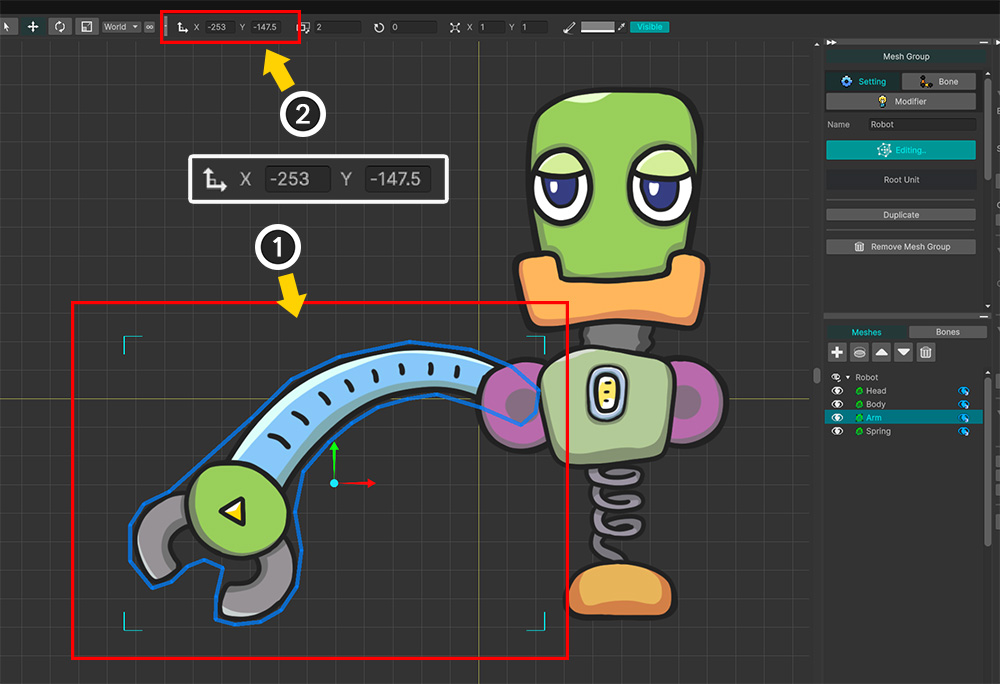
This is a robot character created from a PSD file.
(1) Let's modify the image of the robot's arm and observe the differences in positioning based on the options.
(2) Enable Edit Default Transform mode and note that the position of this robot arm mesh is approximately "(-253, -147)."
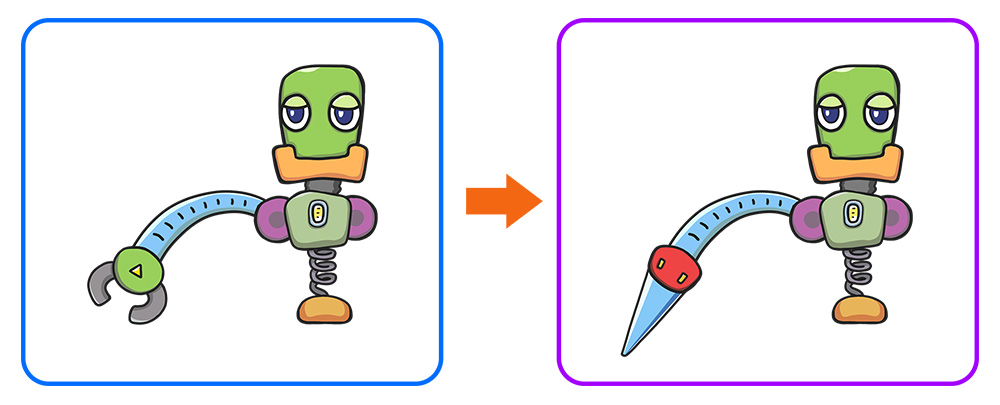
As shown in the image on the right, we modified the PSD file to change the robot's arm from a "claw" shape to a "spike" shape.
Now, let's re-import the modified PSD file.
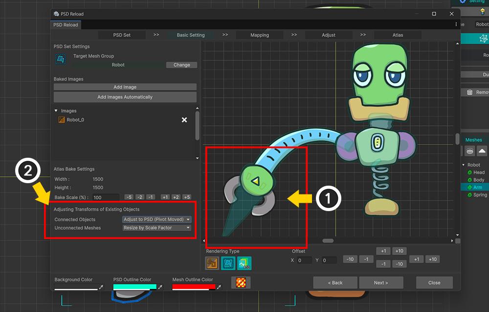
(1) When re-importing the modified PSD file, you can see that the shape of the robot arm has changed compared to the original.
(2) You can see that an "Adjusting Transforms of Existing Objects" item and two options have been added to the UI on the left.
This option determines how existing objects are handled in relation to the PSD file.
- Connected Objects: Determines how to adjust the positions of existing objects that have been mapped and linked to PSD layers.
- Unconnected Meshes: Determines whether to leave unmapped mesh objects as they are or to adjust at least their size.
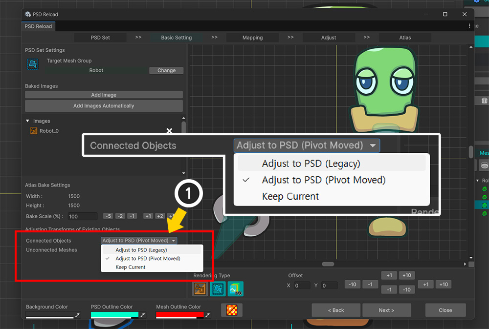
(1) The Connected Objects option includes the following values:
- Adjust to PSD (Legacy): A legacy method that adjusts the positions and other properties of existing objects to match the PSD.
- Adjust to PSD (Pivot Moved): Adjusts the positions of existing objects to match the PSD, prioritizing the adjustment of the mesh's Pivot.
- Keep Current: Updates only the atlas without adjusting the positions or other properties of existing objects.
Here, let's select the "Adjust to PSD (Legacy)" and "Adjust to PSD (Pivot Moved)" options respectively to observe the differences.
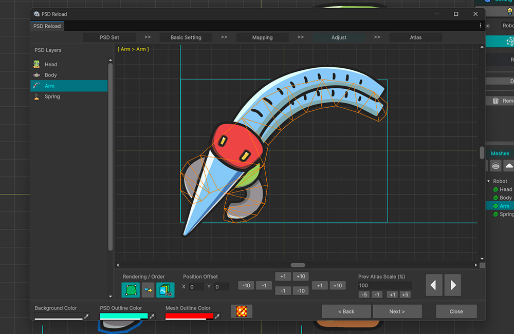
The difference between the two options arises when the shape of the image in the modified PSD file changes, causing a misalignment with the original object that requires adjustment.
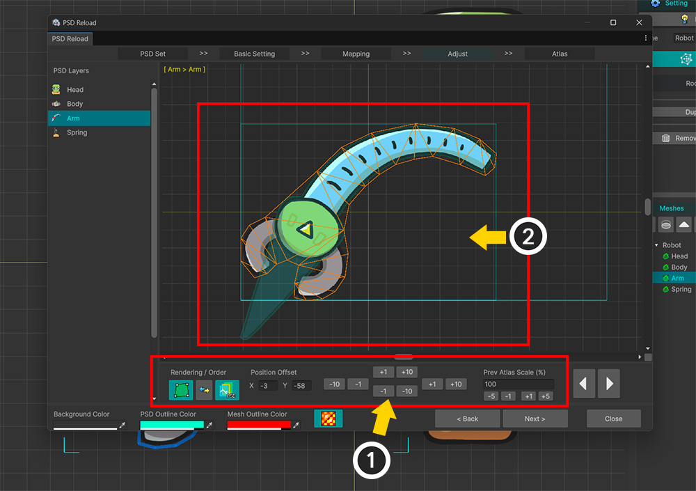
(1) Use the position adjustment tool to align the PSD image with the existing object.
(2) Once aligned, click the Next button to complete the re-import process.
Now, let's check the results of re-importing the PSD for each of the two options.
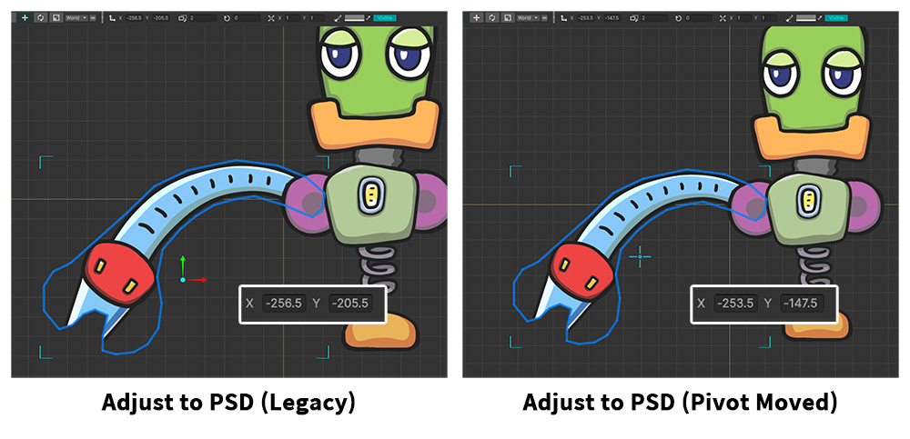
On the surface, the results of both options appear identical.
However, if you select the robot arm mesh object and check its position, the difference becomes apparent.
With the "Adjust to PSD (Legacy)" option, the resulting position is "(-256, -205)," which differs from the original position of "(-253, -147)."
In contrast, the result obtained using the "Adjust to PSD (Pivot Moved)" option yields a position value very similar to the original.
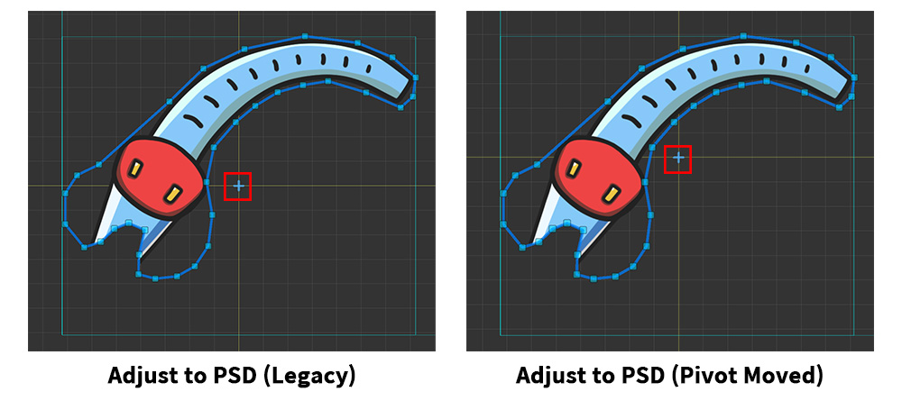
The ability to maintain the object's position values—even when the image shape changed—while using the "Adjust to PSD (Pivot Moved)" option is due to the fact that the mesh's Pivot was moved instead.
With the "Adjust to PSD (Legacy)" option, the mesh's Pivot is simply placed at the center of the newly imported PSD layer image.
With the "Adjust to PSD (Pivot Moved)" option, however, you can see that the Pivot has been shifted slightly away from the center.
In AnyPortrait v1.7.0, the "Adjust to PSD (Pivot Moved)" option is set as the default.
Understanding the differences in how each option processes data will make it easier to handle issues that may arise when re-importing a PSD.
After creating a character from a PSD file, you may find yourself directly modifying the objects' "Default Transform" within AnyPortrait.
However, if you re-import the modified PSD file, the changes you made—such as object positions or sizes—will be reset.
Let's resolve this issue using the option added in AnyPortrait v1.7.0.
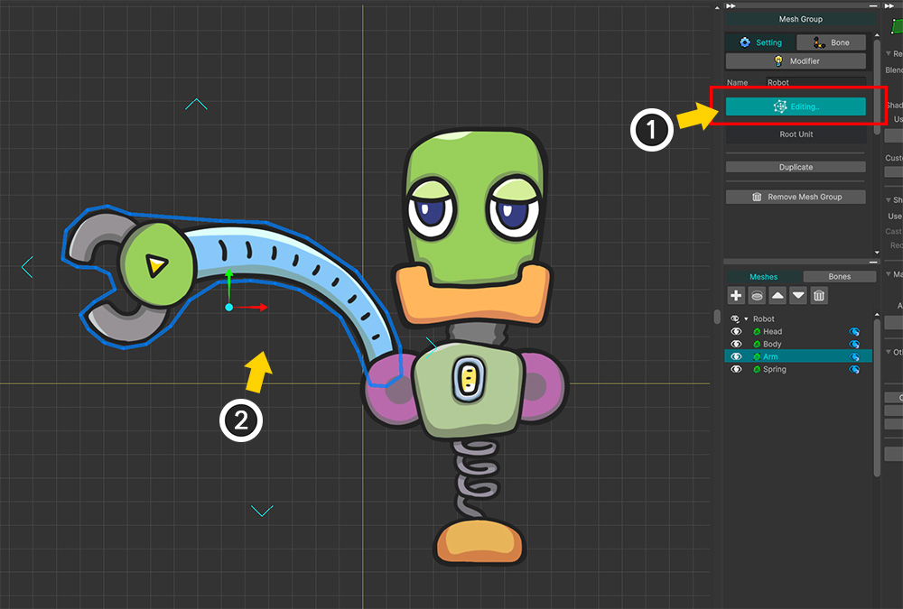
This is a robot created from a PSD file.
(1) Click the Edit Default Transform button on the mesh group editing screen.
(2) Move and rotate the robot's arm object as shown above.
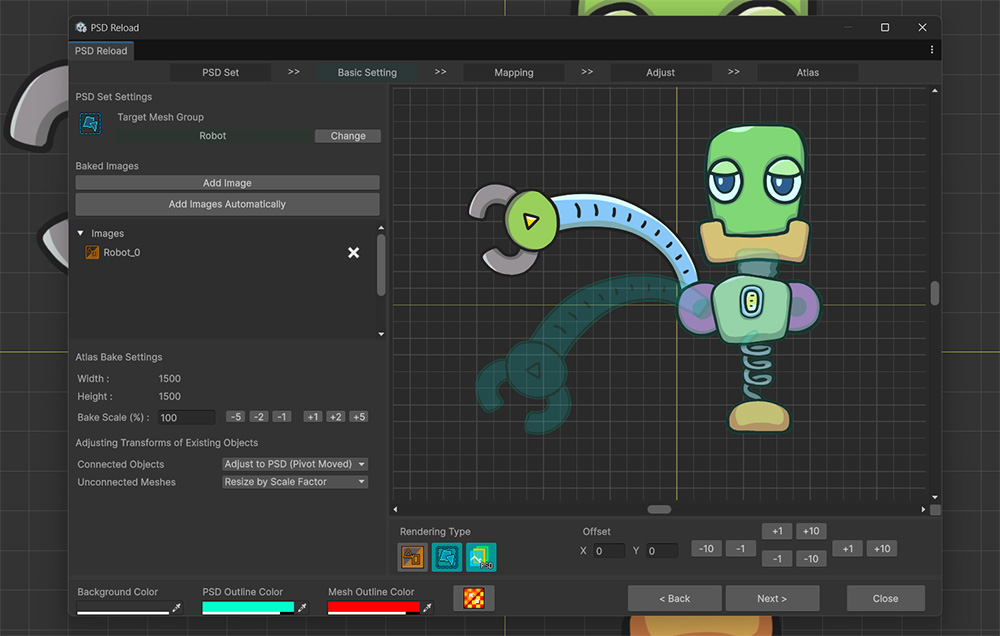
Let's re-import the PSD file.
For this explanation, we will re-import the same PSD file used when the robot was originally created.
In the PSD re-import window, you can see that the robot's arm in the mesh group has been deformed.
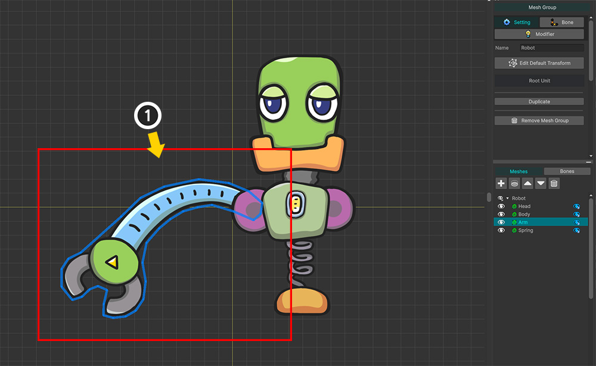
If you complete the PSD file re-import process in this state, the robot arm's transform will revert to its original state, as shown above.
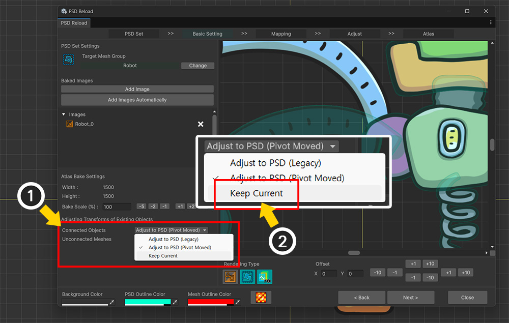
To retain the modified basic transform, you must change the option.
(1) In the "Basic Setting" step of re-importing the PSD file, change the Connected Objects option setting to (2) "Keep Current".
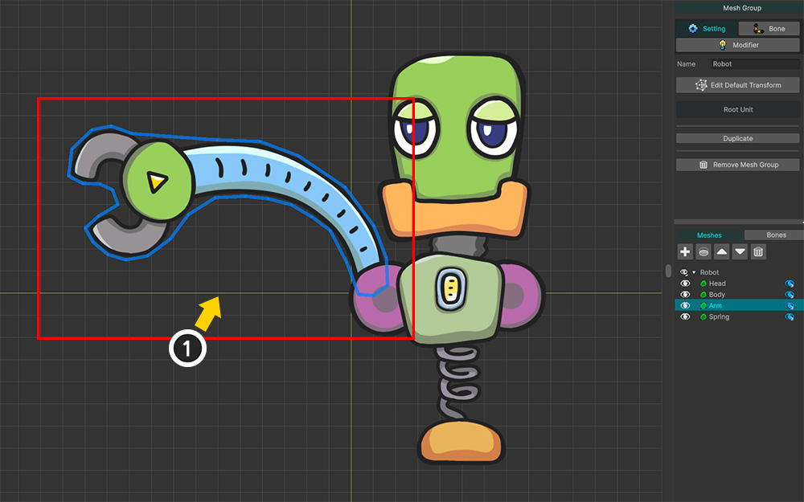
Once you complete the process of re-importing the PSD file, you will see that the existing transformations are preserved.
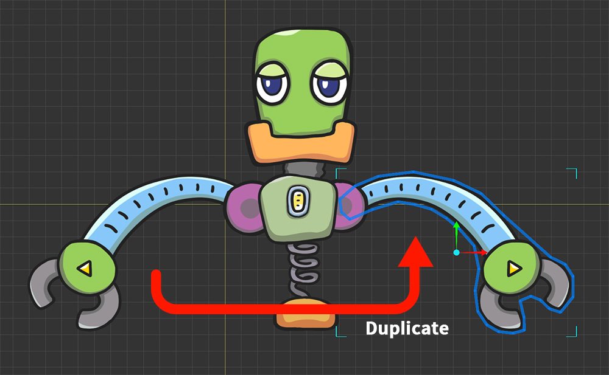
Consider a scenario where you duplicate a mesh object generated from an image layer in a PSD file.
The key to re-importing a PSD file lies in the "mapping" that connects the PSD layer to the objects within the mesh group.
However, it is not possible to map a single image layer from the PSD file to multiple duplicated mesh objects within the same mesh group.
Consequently, duplicated meshes are generally not subject to separate processing, except for the updating of the atlas shared with the originally mapped mesh.
Generally, this method does not cause any major issues.
However, problems arise in specific cases where the overall size needs to be adjusted because the dimensions of the PSD image or mesh group do not match.
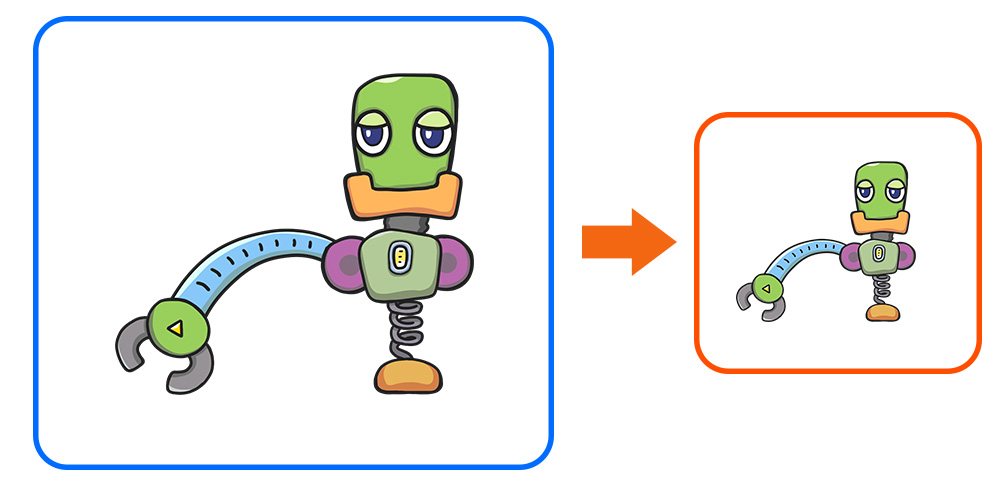
Let's reduce the size of the PSD image file by half, then import it back and apply it to the character.
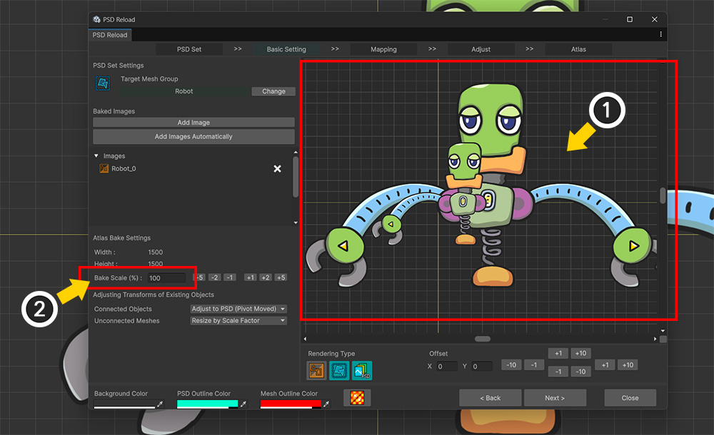
(1) If you re-import a PSD file with altered image dimensions, you will notice a size mismatch between the mesh group and the image.
(2) You must adjust the "Bake Scale" option to align the size of the PSD image with that of the mesh group.
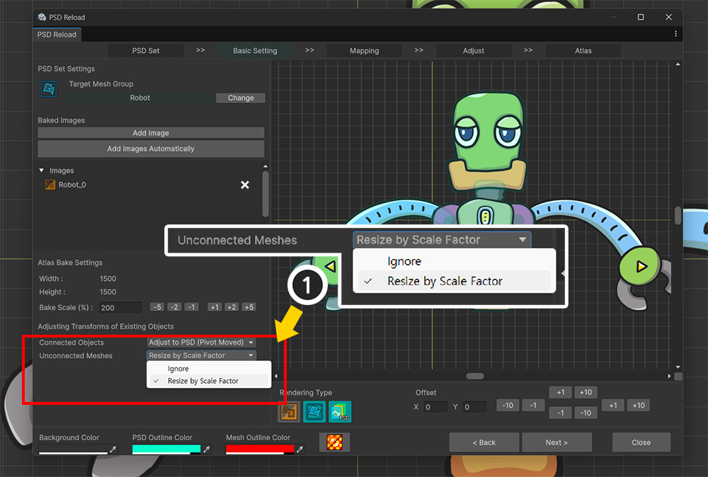
(1) The Unconnected Meshes option includes the following settings:
- Ignore: No specific action is taken for existing mesh objects that are not connected to the PSD.
- Resize by Scale Factor: If overall resizing is required, the same scaling is applied to duplicated meshes affected by the PSD.
Let's complete the process of re-importing the PSD file for each of the two options and compare the results.
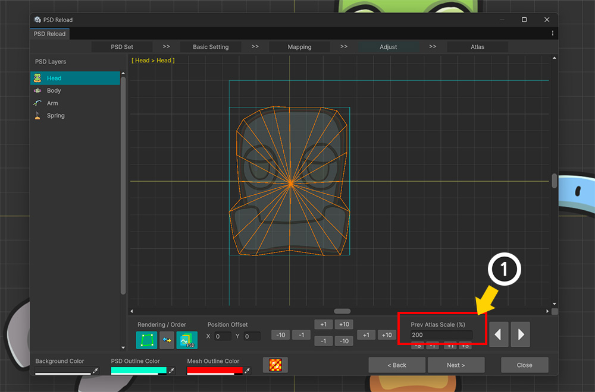
When re-importing a PSD file that requires resizing, the atlas resizing process described above is necessary during the "Adjust" step.
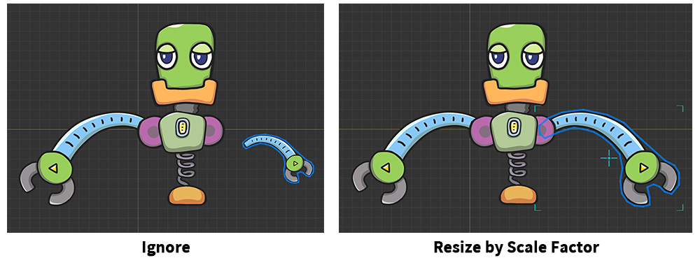
These are the results after re-importing the PSD file for each of the two options.
With the "Ignore" option, the arms of the duplicated mesh objects appeared smaller.
This issue occurred because the image size in the PSD file had decreased, yet no corresponding scaling adjustment was applied.
In contrast, the "Resize by Scale Factor" option yielded the correct result.
The solution involved increasing the size of the mesh objects to compensate for the reduction in the PSD image size—a process that was also applied to the duplicated meshes.
Note
This process applies only to mesh objects that share the same mesh.
The PSD import function involves a process of converting the positions and dimensions of PSD layers to align with the AnyPortrait system.
While AnyPortrait aims to utilize the data from the PSD file as fully as possible, a specific issue arises here.
Unlike image layers, "Folder layers" in PSD files do not possess specific positional data.
In contrast, the "Sub-Mesh Group" in AnyPortrait—which corresponds to the PSD folder layer—includes transform properties such as position.
To resolve this discrepancy, AnyPortrait calculates the average position of the image layers contained within the folder layer and applies that value as the position for the "Sub-Mesh Group."
Generally, this method works without major issues.
However, if the layer structure of the PSD file differs from the structure of the mesh groups, misalignment issues occur.
This happens because incorrect values—derived during the process of calculating the average position of image layers—affect the sub-mesh groups and their child objects.
Here, let's look at how this problem occurs and how to resolve it.
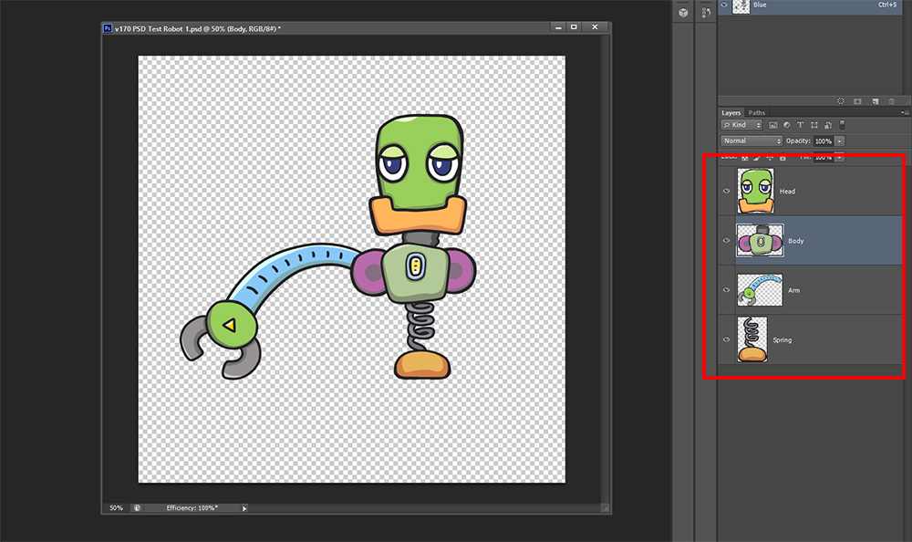
To reproduce the issue, let's set up the layer hierarchy in the PSD file differently from the mesh group hierarchy.
First, here is the layer hierarchy in the PSD file.
In this case, no folder layers were created, so all image layers are located at the same hierarchical level.
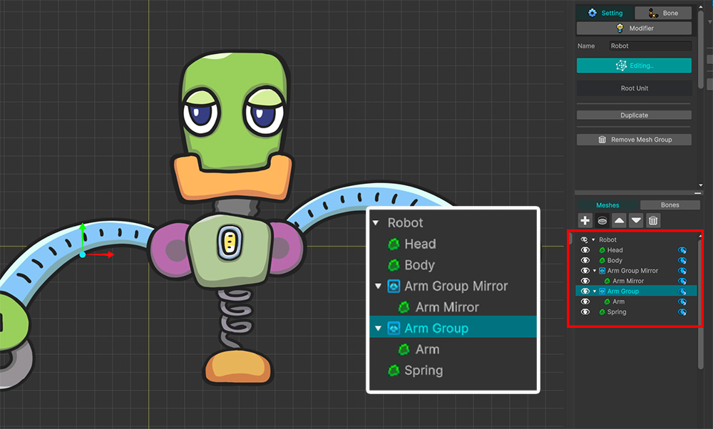
On the other hand, the robot mesh group in AnyPortrait contains a sub-mesh group.
You can see that a mesh named "Arm" belongs to the sub-mesh group.
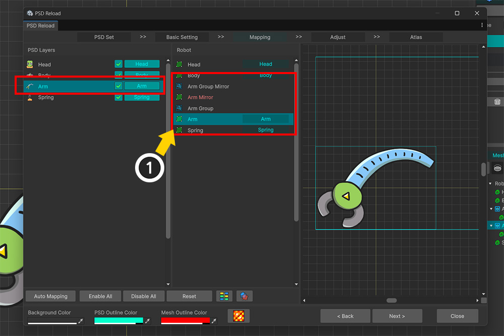
Let's try re-importing the PSD file in this state.
(1) In the "Mapping" step, you can see that the layer hierarchy of the PSD does not match the hierarchy within the mesh group.
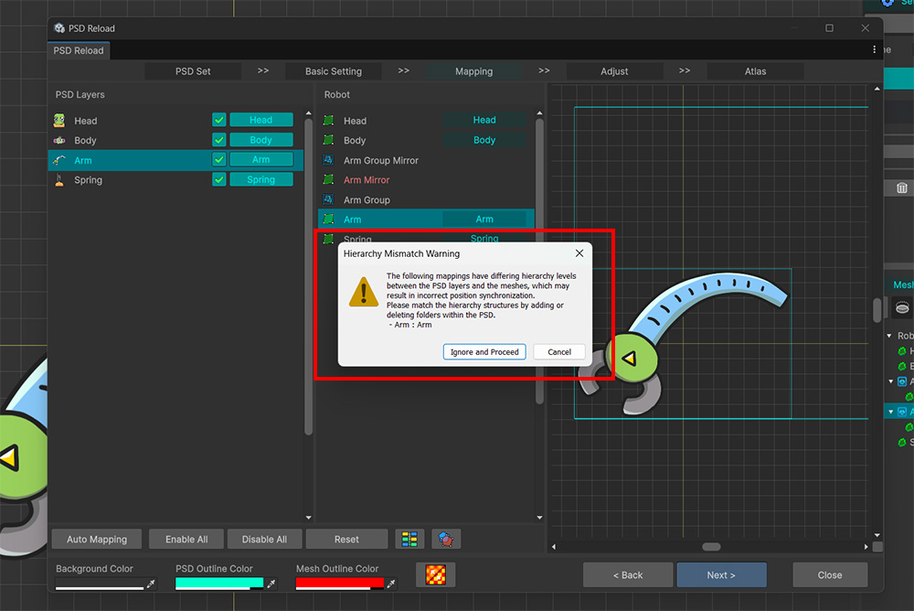
If you attempt to proceed by clicking the Next button in this state, a warning message like the one shown above will appear.
This message indicates that a discrepancy in the hierarchical structure was detected during the mapping process, meaning the hierarchy of the PSD file must be aligned with that of the message group.
Let’s ignore this warning and click the Ignore and Proceed button to force the process to completion.
Note
This warning message only checks whether the "hierarchy levels" of the mapped targets match.
It does not detect cases where levels match but the items belong to unmapped folder layers or sub-mesh groups.
Therefore, rather than relying on the warning message, it is recommended to verify the status of the PSD file and mesh groups beforehand.
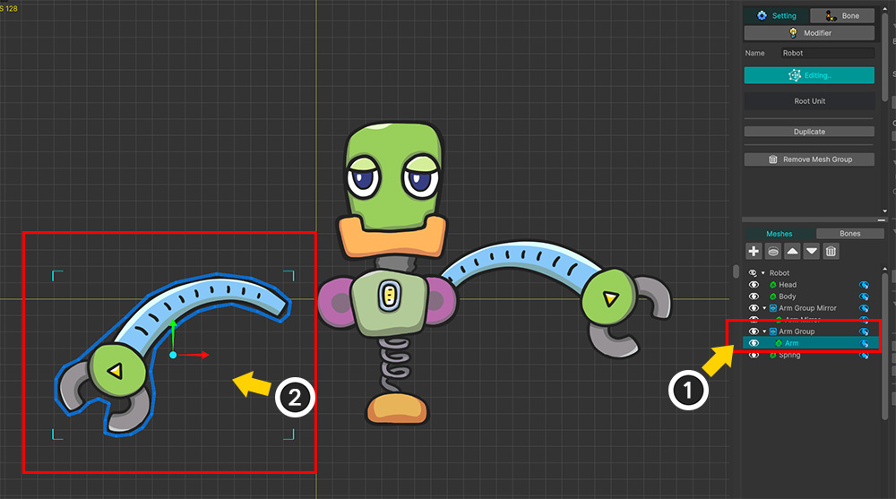
(1) Let's examine the "Arm" mesh, where a structural discrepancy compared to the PSD occurred.
(2) You can see that it has shifted to an incorrect position, as shown above, due to an error in the positioning process.
The most reliable solution in this case is to modify the hierarchy of the PSD file or the mesh groups so that they match each other.
In particular, it is generally easier to add folder layers within the PSD file.
Once you map the folder layers to the sub-mesh groups, the re-import process should complete successfully.
However, you can also resolve this issue by using the "Keep Current" option mentioned earlier.
This issue can be avoided because the "Keep Current" option does not perform position adjustments.
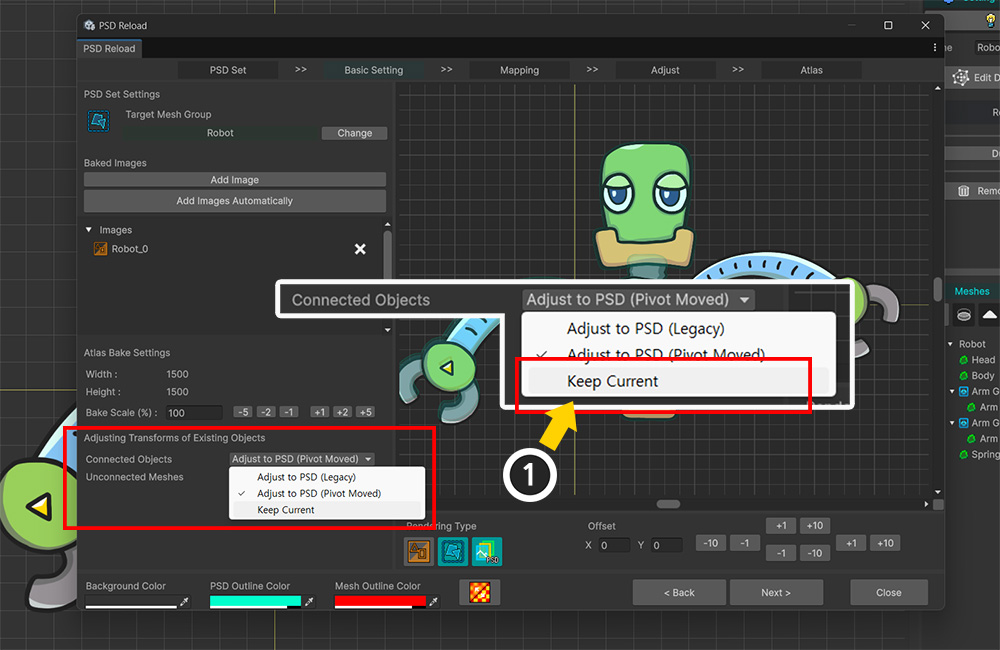
Let's re-import the PSD file with the Connected Objects option set to "Keep Current," as explained earlier.
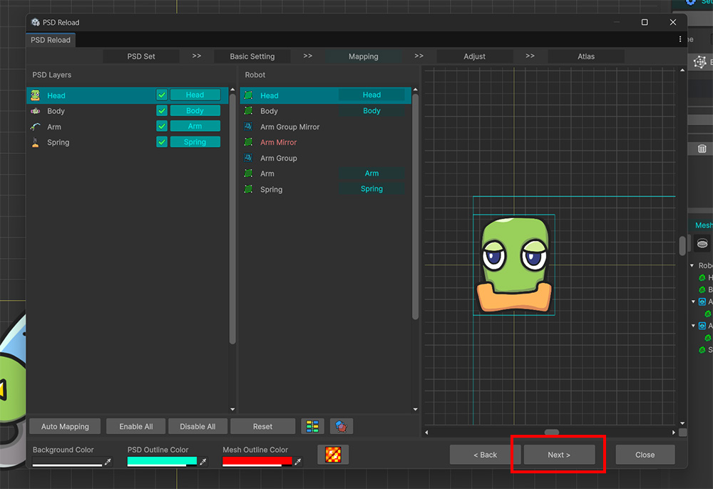
When the "Keep Current" option is enabled, no warning message appears during the "Mapping" step, even if there are differences in the layer structure compared to the PSD file.
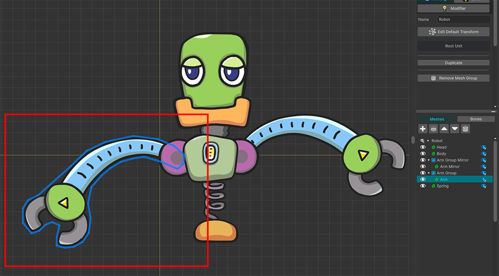
You can see that the process of re-importing the PSD file completes successfully without any need for position adjustments.